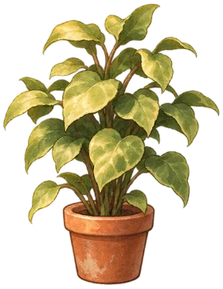
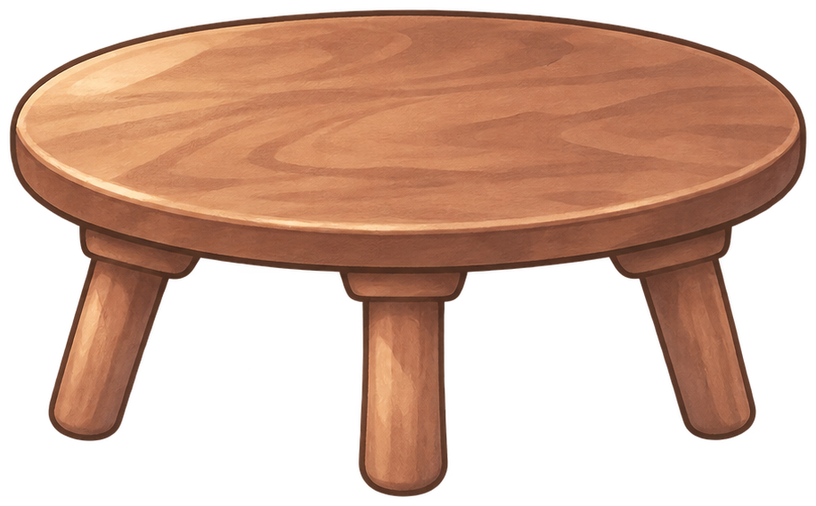
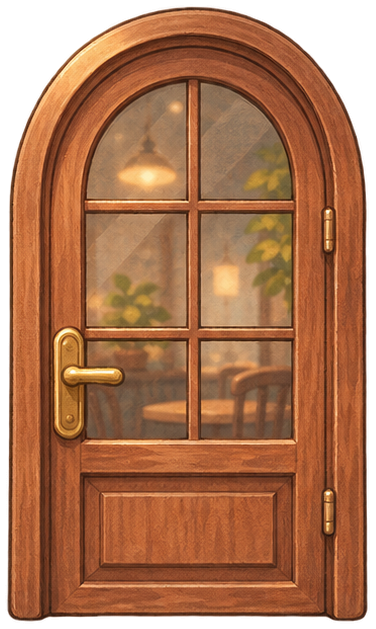

Vẽ cùng một thế giới.
Tỉ lệ tham chiếu của bộ artwork Yên hiện có. Đây là bảng kiểm tra hình ảnh, không phải 90 tình huống đã được vẽ.
Reference only · Owner visual review pending
01 / Phối cảnh toàn quán
Nhân vật, bàn, ghế và cây dùng đúng nguồn artwork sơn vẽ của Yên Lab. Không dùng đồ vật SVG tạo bằng hình học để thay thế sprite.






02 / Cùng thế giới trên điện thoại
03 / Tài sản nguồn tham khảo

Mọi cảnh hoàn chỉnh cần có chứng cứ so sánh với tỉ lệ này, nguồn asset, màn hình mobile và bản duyệt thị giác. Một bài test xanh không phải chứng nhận artwork đã phù hợp.